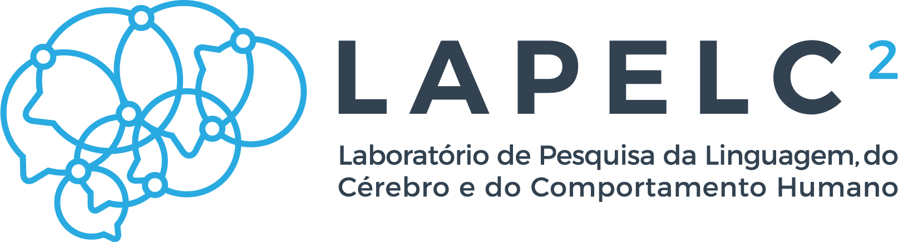
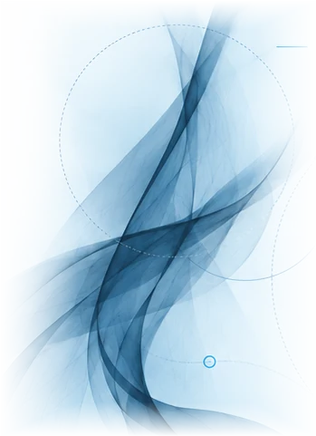

Eletroencefalografia
Registro da atividade elétrica cerebral durante o processamento da linguagem e de outras funções cognitivas.
Saiba mais
LAPELC² / INFRAESTRUTURA / UFAL
Nosso laboratório integra diferentes métodos para estudar os processos cognitivos e neurais envolvidos na linguagem e no comportamento humano, em uma abordagem multimétodos.

Nossa infraestrutura combina registros neurais, do movimento do olhar e medidas comportamentais, permitindo investigar a linguagem sob múltiplas perspectivas.
Registro da atividade elétrica cerebral durante o processamento da linguagem e de outras funções cognitivas.
Saiba maisRegistro dos movimentos oculares para investigar como a informação linguística é processada ao longo do tempo.
Saiba maisTarefas experimentais e registros comportamentais que complementam as medidas neurais e oculares.
Saiba maisSistemas de aquisição neurofisiológica e rastreamento ocular documentados nos registros institucionais do Lapelc². As descrições distinguem as características dos equipamentos das aplicações possíveis em pesquisa.
Electrical Geodesics, Inc. (EGI) · aquisição em 2015
O Lapelc² dispõe de um sistema de eletroencefalografia geodésica de alta densidade com 256 canais, destinado ao registro da atividade elétrica cerebral. Conforme o inventário da pMulti/UFAL, sua configuração inclui toucas de sensores em três tamanhos, um amplificador de alta sensibilidade e baixo nível de ruído e um computador com aplicações específicas para aquisição e análise dos registros.
A distribuição dos eletrodos pela cabeça permite acompanhar a dinâmica temporal de respostas neurais em tarefas de linguagem. Entre as aplicações metodológicas estão a análise de potenciais relacionados a eventos (ERPs), a comparação de respostas a diferentes estímulos e o estudo de processos cognitivos durante percepção e compreensão linguística. Os procedimentos de preparação, aquisição e análise dependem do protocolo de cada pesquisa.
SR Research · aquisição em 2012
Rastreador ocular baseado no registro por câmera, que permite estimar para onde o participante dirige o olhar e como a posição dos olhos varia ao longo de uma tarefa. A pMulti/UFAL identifica expressamente o modelo EyeLink 1000 e descreve a obtenção de informações sobre fixações (períodos em que o olhar permanece numa região) e sacadas (deslocamentos rápidos entre posições).
Essas medidas podem ser relacionadas à apresentação de estímulos e às respostas comportamentais para estudar leitura, exploração visual de cenas, atenção e processamento da linguagem. A interpretação exige definição das áreas de interesse, calibração, critérios de qualidade do sinal e tratamento adequado dos eventos oculomotores. O cadastro institucional não especifica, por si só, todos os acessórios ou modos de registro instalados.
SR Research · equipamento identificado na página institucional da FALE
O EyeLink II é um sistema de rastreamento ocular montado na cabeça do participante. A arquitetura do modelo utiliza câmeras orientadas aos olhos e um mecanismo de acompanhamento da posição da cabeça, permitindo registrar movimentos oculares em tarefas experimentais. Diferencia-se, portanto, do arranjo de rastreamento com câmera externa característico do EyeLink 1000.
O equipamento possibilita a investigação de fixações, sacadas e distribuição da atenção visual em protocolos de psicolinguística e cognição. A página oficial da FALE confirma sua presença no inventário do laboratório; não publica, porém, o ano de aquisição nem a configuração completa de acessórios. Esses dados não são apresentados aqui como se estivessem verificados.
Os modelos e as informações cadastrais acima documentam a infraestrutura associada ao laboratório. A disponibilidade para cada protocolo, incluindo condições de funcionamento e suporte técnico, deve ser consultada antes do agendamento.
O laboratório conta também com uma cabine acústica para atividades experimentais que requerem controle das condições sonoras. A adequação do ambiente, dos estímulos e dos equipamentos a cada coleta deve ser avaliada no planejamento do estudo.
Não são informados valores de isolamento, dimensões ou especificações construtivas, pois esses dados não constam dos registros institucionais consultados.
Consultar condições de usoO Lapelc² integra os cadastros de infraestrutura de pesquisa da UFAL e da plataforma nacional do Ministério da Ciência, Tecnologia e Inovação.
A infraestrutura do Lapelc² está disponível para projetos de pesquisa desenvolvidos pelo grupo e em colaboração com pesquisadores externos, mediante alinhamento de objetivos e viabilidade.